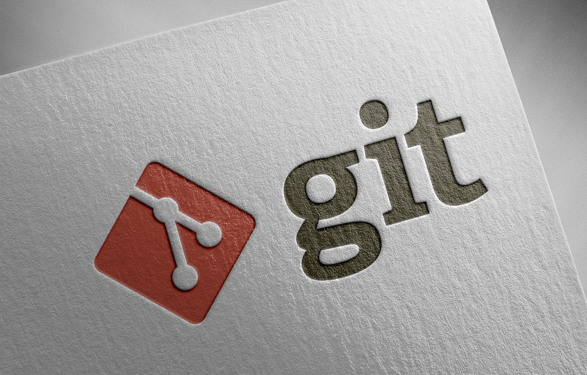

Useful Git commands
October 5, 2023

TL;DR
This post provides a running list for helpful git commands.
Note that all user input is identified by angle brackets with capital letters, for example: <INSERT ...>.
Additional git references can be found online at the following sites:
- git documentation;
- git user manual;
- GitHub documentation; and,
- Atlassian tutorials and glossary.
Remote Repositories
In git, it is possible to manage set of tracked remote repositories.
Check for linked repository
To check if a local repository is linked to a remote repository:
$ git remote -v
Add linked repository
To link a local to a remote repository:
$ git remote add origin <REMOTE LINK>
Undoing Pushed Changes
The instructions below are derived from Atlassian.
Public commits cannot be undone, but there are workarounds as described below.
To revert the last commit, where git will create a new commit with the inverse of the last commit:
git revert HEAD
This will add a new commit to the current branch history.
Alternatiuvely, to remove sensitive data from a repository, see the instructions on GitHub.
Branches
In git, branches are a part of the development process. Effectively, they are a pointer to a snapshot of any repository changes. Typically, when you want to add a new feature or fix a bug, you spawn a new branch to encapsulate the changes.
List all local branches
To list all local branches for a particular repository:
$ git branch -a
Create local branch
To create a branch on your local machine and switch to this branch:
$ git checkout -b <NEW BRANCH NAME>
Push local branch to remote
To push a local branch to github:
$ git push origin <NEW BRANCH NAME>
Set upstream branch
The easiest way to set the upstream branch is to use:
$ git branch --set-upstream-to origin/<REMOTE BRANCH NAME>
Alternatively, you can use the git push command with the -u option for upstream branch:
$ git push -u <REMOTE BRANCH NAME> <LOCAL BRANCH NAME>
Equivalently, you can use the --set-upstream-to option:
$ git push --set-upstream-to <REMOTE BRANCH NAME> <LOCAL BRANCH NAME>
Check upstream branch
To check which remote branch a local branch is tracking use:
$ git branch -vv
Create local & remote branches
The instructions below are derived from Free Code Camp.
Create a local branch:
$ git checkout -b <BRANCH>
Edit, add and commit any changes. Then push the new local branch to the remote repository:
$ git push -u origin <BRANCH>
where the -u option sets the upstream branch.
Delete local & remote branches
The instructions below are derived from Stack Overflow.
When deleting branches both locally and remotely, keep in mind that there are three different branches involved:
- The local branch “X”.
- The remote origin branch “X”.
- The local remote-tracking branch “origin/X” that tracks the remote branch “X”.
To delete the remote branch and the locally-stored remote-tracking branch in one command, use:
$ git push origin --delete <BRANCH>
Then, to delete the local branch use:
$ git branch -d <BRANCH>
with the -D option to force delete, if necessary. And that covers the deletion of all 3 branches with only 2 commands.
Searching for branches
With –contains, shows only the branches that contain the named commit (in other words, the branches whose tip commits are descendants of the named commit).
$ git branch [-r|-a] --contains <COMMIT>
Note that option -r causes the remote-tracking branches to be listed, and option -a shows both local and remote branches. Leaving these options out causes only the local branches to be listed.
Commits
In git, a commit records changes to a repository.
Amend most recent local commit
To replace the message of the most recent commit without creating a new commit in the history:
$ git commit --amend -m "<MESSAGE>"
$ git commit --amend
Where the latter opens the default editor with the old message pre-filled ready to edit.
The option --amend also permits the addition of staged changes to the commit. If you only want to change the message and not the content, make sure nothing is staged before running it. Alternatively, to amend content but keep the message use:
$ git commit --amend --no-edit
Note that the amended commit gets a new hash, since amending rewrites it. Also, if you’ve already pushed a commit prior to amending, you’ll need to force-push the amended commit to update it on the remote:
$ git push --force-with-lease
Critically, this can cause issues for others who have already pulled the old commit. So, be cautious when pushing with force.
Submodules
A submodule is a repository embedded inside another repository. The submodule has its own history; the repository it is embedded in is called a superproject. Additional submodule documentation can be found online here:
Cloning repository with submodules
When you clone a repository with submodules, you get the directories that contain submodules, but none of the files within them by default.
$ git clone <HTTPS ADDRESS>
In order to clone the submodules, you must run two commands: git submodule init to initialize your local configuration file; and, git submodule update to fetch all the data from the submodule repository:
$ git submodule init
$ git submodule update
Alternatively, if you pass --recurse-submodules to the git clone command, it will automatically initialize and update each submodule in the repository, including nested submodules if any of the submodules in the repository have submodules themselves.
$ git clone --recurse-submodules <HTTPS ADDRESS>
Pulling changes from submodule remote
The simplest workflow for using submodules is if you are simply consuming it within the repository and not modifying it there. That is, you wish to get updates from the submodule repository (i.e. upstream changes from submodule remote), but you are not modifying the submodule within the repository locally.
If you want to check for new work in a submodule, you can go into the directory and run git fetch and git merge the upstream branch to update the local code.
$ git fetch
$ git merge origin/main
Alternatively, this can be run in one step, where git will go into your submodules and fetch and update for you.
$ git submodule update --remote <SUBMODULE FOLDER>
Omitting the submodule folder will update all submodules within the repository. Then git commit can be run to commit all updates to the repository.
Pulling changes from repository remote
Instead of updating the submodules, it is possible to get updates for the repository and all submodules at once (i.e. upstream changes from the repository remote). By default, the git pull command recursively fetches submodule changes; however, it does not update the submodules. To finalize the update, you must also run git submodule update:
$ git pull
$ git submodule update --remote
Alternatively, if you want to automate this process, you can add the --recurse-submodules option to the git pull command. This will make git run git submodule update immediately after the pull, putting the submodules in the correct state.
$ git pull --recurse-submodules
And again, git commit can be run to commit all updates to the repository.
Submodule changes
A more complicated workflow involves modifying the submodule within the repository. So far, when we run the git submodule update command to fetch changes from the submodule repositories, git gets the changes and updates the files in the subdirectory but leaves the submodule in a “detached HEAD” state. This means that there is no local working branch tracking changes. With no working branch tracking changes, even if you commit changes to the submodule, those changes will be lost the next time you run git submodule update. There are some extra steps to track changes in a submodule.
The process for committing changes to a submodule to both the submodule repositories and the main repository involves a number of steps. First, you need to either create or check out a branch in each submodule:
$ cd <SUBMODULE FOLDER>
$ git checkout <BRANCH NAME>
Ensure that the branch is tracking the main branch on the remote repository:
$ git branch -vv
$ git branch --set-upstream-to origin/main
After making changes within the submodule, we stage and commit them to the local branch we just checked out.
$ git add <FILENAME>
$ git commit -m "<COMMIT MESSAGE>"
Next, we check for updates to the remote submodules. However, we need to tell git what to do if there have been changes, either: “merge” or “rebase.” For our purposes, we will typically rely on the --merge option. Then, we can pull the upstream changes for the submodules into the local repository using:
$ cd ..
$ git submodule update --remote --merge
Now we have some changes in our submodule directory: some of these were brought in from upstream through updates and others were made locally and are not available to anyone else since they have not been pushed to the remote. We have already committed these changes in the submodule directory, but we now need to commit them in the main project local repository.
Now, if we commit in the main project and push it up without pushing the submodule changes up as well, other people who try to check out our changes are going to be in trouble since they will have no way to get the submodule changes that are depended on. Those changes will only exist on our local copy. The simple option is to go into each submodule and manually push to the remotes to make sure they’re externally available and then push the local repository (i.e. main project). To push to the upstream branch on the remote, use:
$ cd <SUBMODULE FOLDER>
$ git push origin HEAD:main
To push to the branch of the same name on the remote, use:
$ cd <SUBMODULE FOLDER>
$ git push origin HEAD
If you push to a remote branch with the same name on the remote, then you must go to the particular submodule remote and complete a pull request and merge manually.
Now, we return to the main project and add and commit any changes, including those from the submodule. Next, we pull any changes from the main project on the remote. Finally, we push our main project changes to the remote. Where we use the “check” option to ensure the push fails if any of the committed submodule changes haven’t been pushed.
$ cd ..
$ git add <FILENAME>
$ git commit -m "<COMMIT MESSAGE>"
$ git pull
$ git push --recurse-submodules=check
Alternatively, The other option is to use the “on-demand” option, which will attempt to push the submodule changes for you.
$ git push --recurse-submodules=on-demand
Change submodule path
The instructions below are derived from Stack Overflow.
To rename a git submodule directory:
mv <OLD SUBMODULE PATH> <NEW SUBMODULE PATH>
git rm <OLD SUBMODULE PATH>
git add <NEW SUBMODULE PATH>
git submodule sync
Note that this approach may not update the index and .gitmodules properly.
Differences
In git, it is possible to show differences between commits, commit and working tree, branches, etc.
For code review purposes, it can be helpful to inspect and/or export all changes between reference points.
First, to retrieve the SHA codes, check the commit history either on the current or a named branch:
git log –oneline
git log –oneline <BRANCH NAME>
To compare two commits or the last commit:
git diff <COMMIT> <COMMIT>
git diff <COMMIT> HEAD
To export comparison to file:
git diff <COMMIT> <COMMIT> > <FILEPATH>.txt
To compare present/unstaged code with the code in staging area:
git diff
To compare present/unstaged code with the last commit:
git diff –staged
To compare present/unstaged code with any commit:
git diff <COMMIT>
To compare the tips of two branches:
git diff <BRANCH NAME> <BRANCH NAME>
git diff <BRANCH NAME>..<BRANCH NAME>
To compare Changes that occurred on the second branch since the first branch was started off it:
git diff <BRANCH NAME>...<BRANCH NAME>
Errors
Below, we provide solutions to common git errors.
Cannot lock ref
The instructions below are derived from a post on Medium.
The git error: cannot lock ref can usually be resolved by pruning old branches that might be conflicting with a pull operation.
git remote prune origin